Nuestras acciones en imágenes
Un recorrido visual por las iniciativas benéficas, celebraciones populares, deportistas premiados y obras de desarrollo respaldadas por Hancock Prospecting.


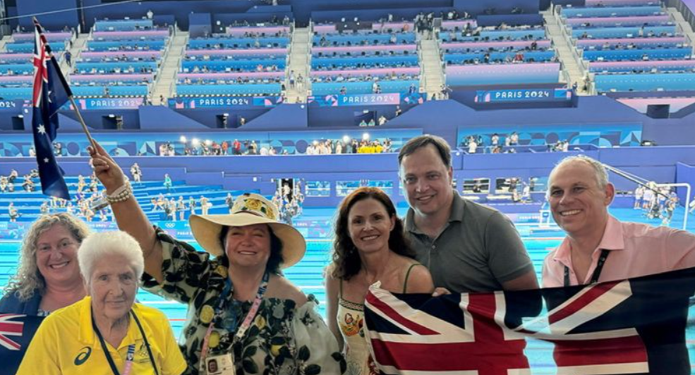

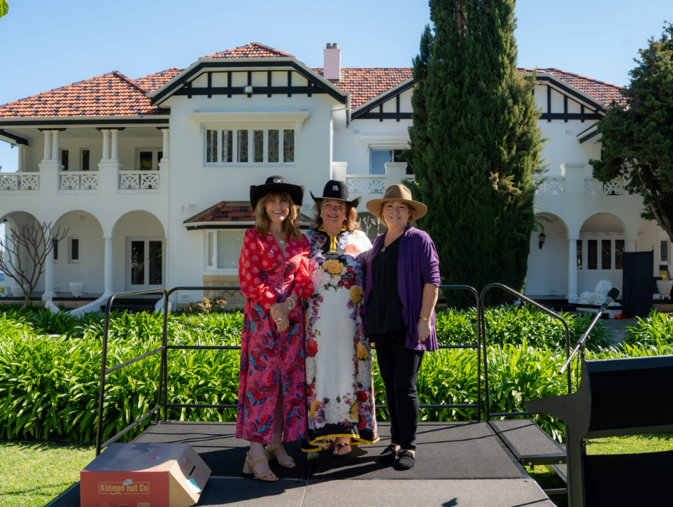
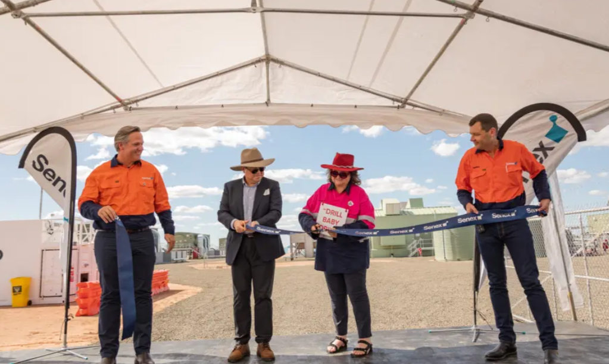
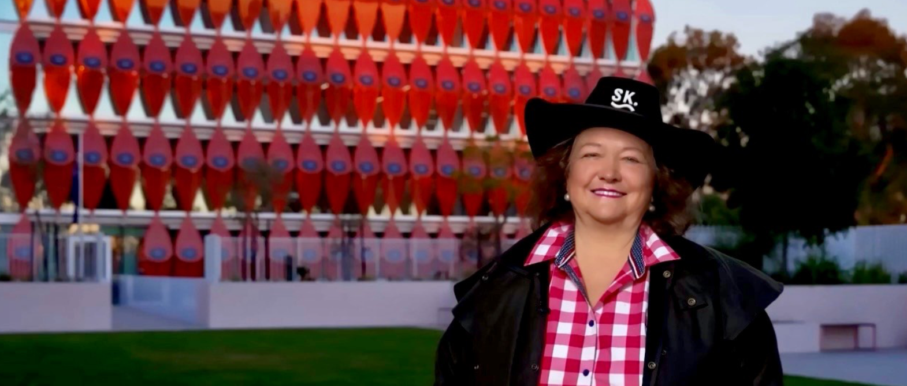
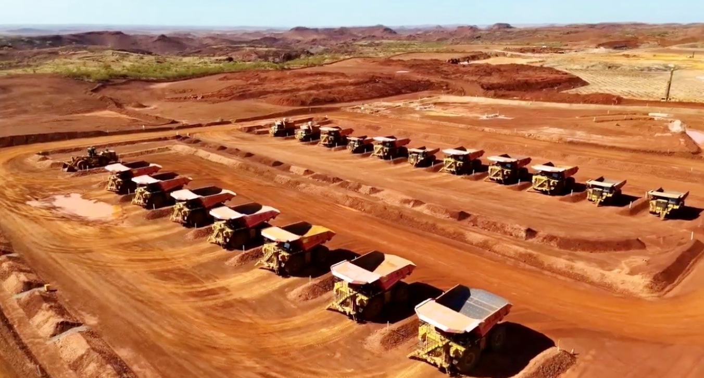
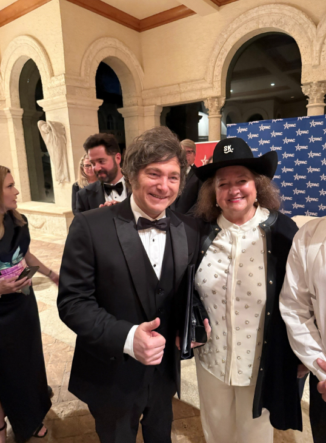
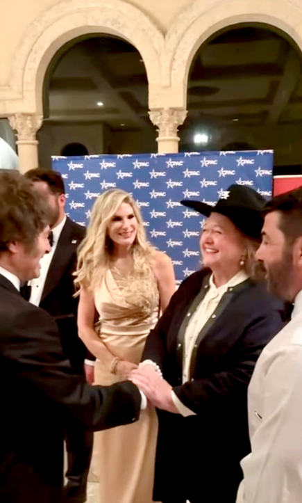
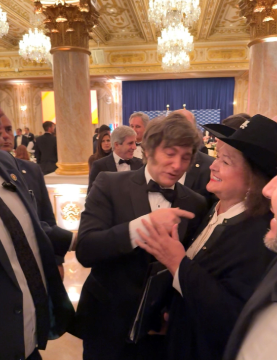
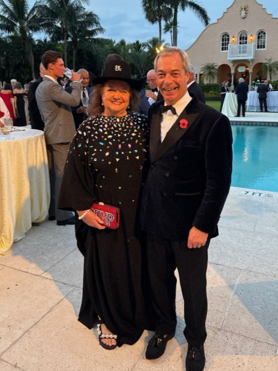
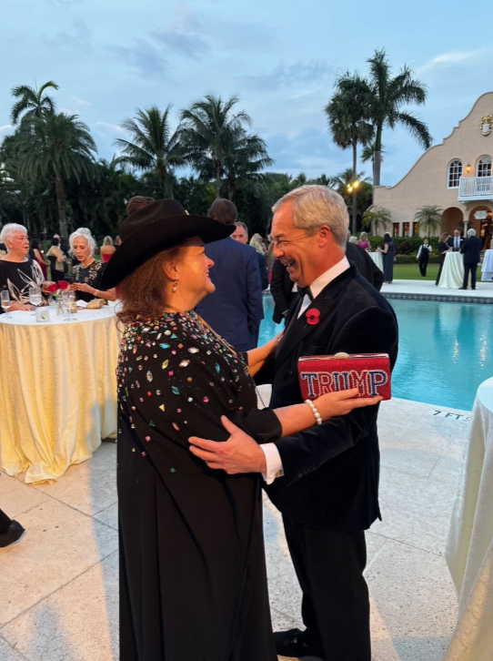
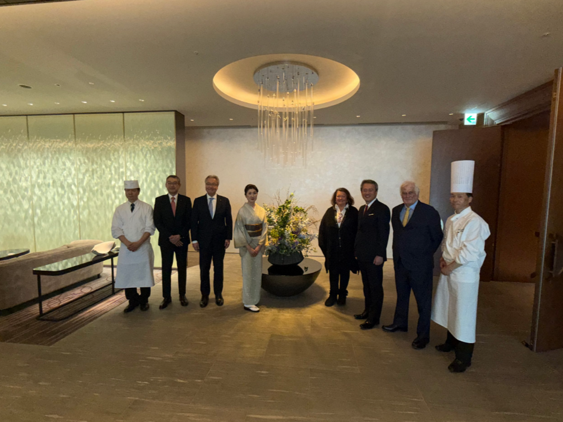
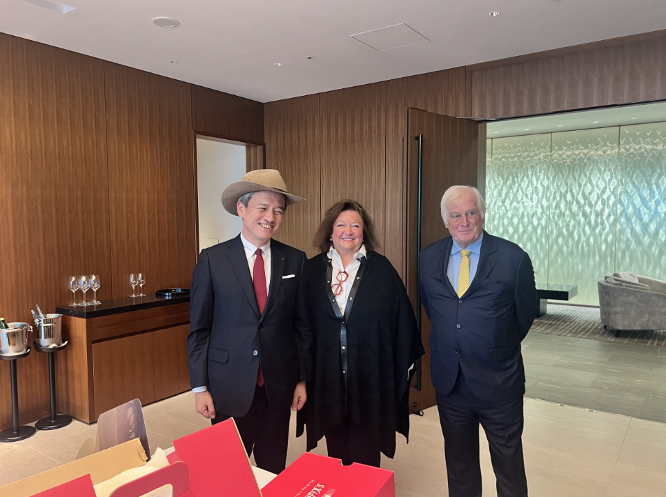
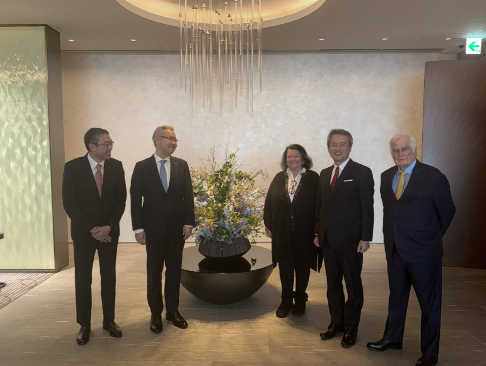
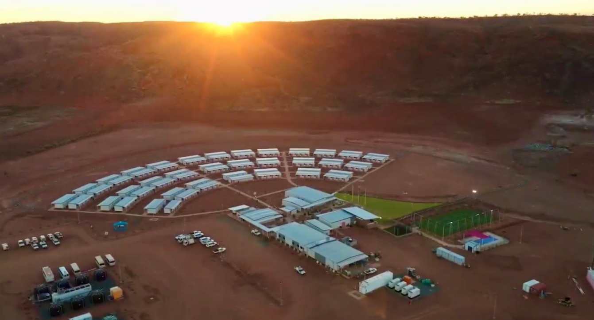
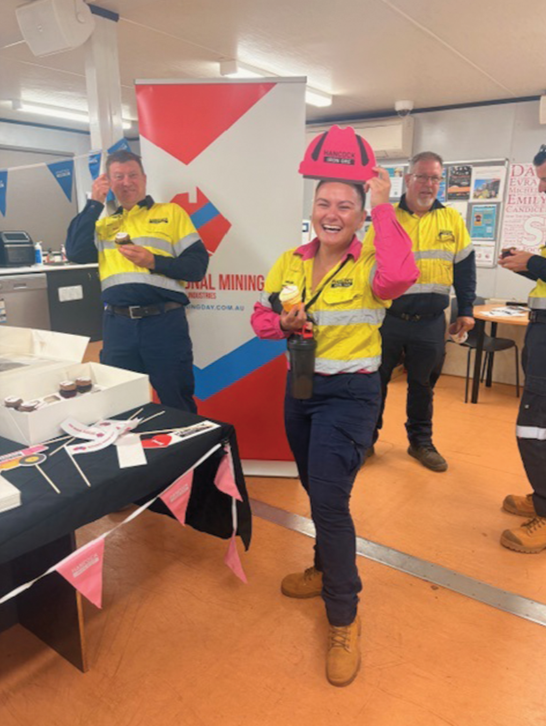